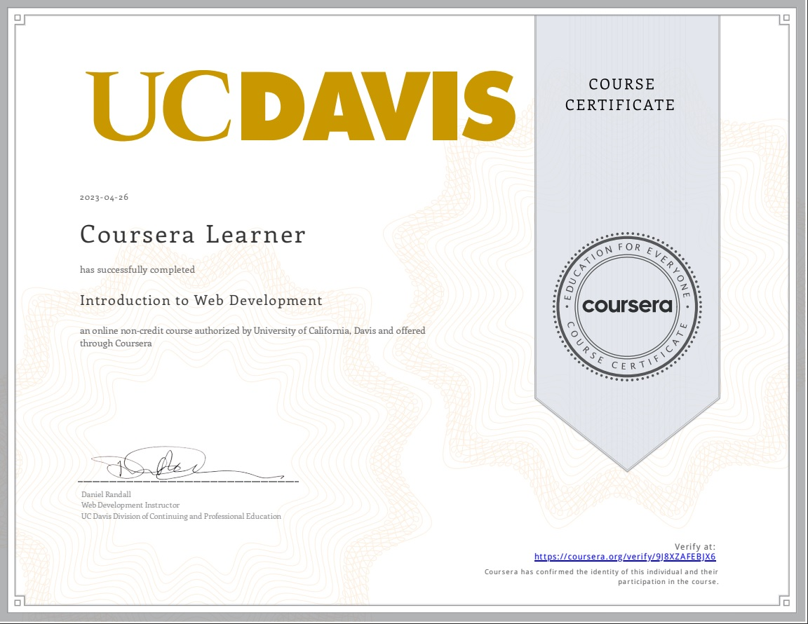
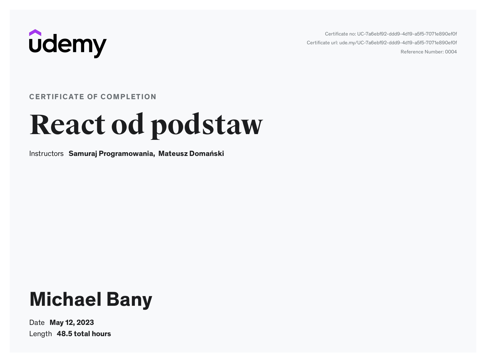
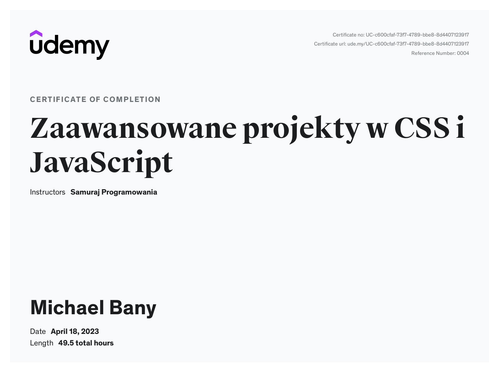

Hi, I'm Michael
Animation on Scroll using HTML CSS and JS
Scroll more
Animation on Scroll using HTML CSS and JS
Keep scrolling
Animation on Scroll using HTML CSS and JS
Last scroll section
Animation on Scroll using HTML CSS and JavaScript
  